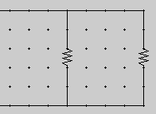
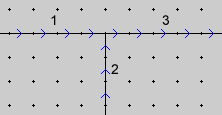
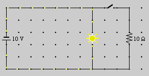
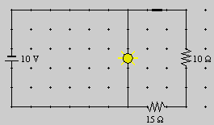
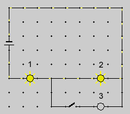
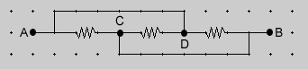

Prerequisites
Students should be familiar with the concepts of electric potential, electric potential difference (voltage), current, and resistance.
Learning Outcomes
Students will be able to explore different circuit configurations and will acquire an understanding of the behaviour of resistors, light bulbs, batteries, switches, voltmeters, and ammeters in electric circuits in terms of basic concepts and laws pertaining to electric circuits.
Instructions
Students should know how the applet functions, as described in Help and ShowMe.
The applet should be open. The step-by-step instructions in the following text are to be done in the applet. You may need to toggle back and forth between instructions and applet if your screen space is limited.
 Terminology, Definitions, Theorems,
Laws
Terminology, Definitions, Theorems,
Laws
 Terminology
Terminology
 Definition of Resistance and Ohm's
Law
Definition of Resistance and Ohm's
Law
 Power
Power
 In-Series and
In-Parallel
In-Series and
In-Parallel
 Kirchhoff's Junction Rule (Current
Law)
Kirchhoff's Junction Rule (Current
Law)
 Kirchhoff's Loop Rule (Voltage Law)
Kirchhoff's Loop Rule (Voltage Law)
 Potential Difference, Current,
Power, and Resistance
Potential Difference, Current,
Power, and Resistance
 Exercise 1 (A Simple
Circuit)
Exercise 1 (A Simple
Circuit)
 Exercise 2 (A Circuit With Two
Parallel Branches)
Exercise 2 (A Circuit With Two
Parallel Branches)
 Exercise 3 (In-series and
In-parallel)
Exercise 3 (In-series and
In-parallel)
 Exercise 4 (Challenge
Questions)
Exercise 4 (Challenge
Questions)
Terminology
Electric potential is a quantity that is defined at any given point in a circuit. It is analogous to elevation when walking in the mountains. Just as every point on a trail has a specific elevation, so does every point in a circuit have a specific electric potential.
Electric potential difference is the difference between the values of the electric potential at two points in a circuit. E.g., if the potential is equal to 20 V at point A and equal to 12 V at point B, then the potential difference between the two points is 20 V - 12 V = 8 V. Another word for electric potential difference is voltage.
The notation for potential difference used in this Lesson is DV. In many books, you will find that the symbol V is used for potential difference. However, using just V does not make it clear that a difference is involved, so here DV will be used. Of course, "V" also denotes the SI-unit "volt" of potential and potential difference.
We will use the symbol DV to denote the absolute value of the potential difference, i.e., a positive quantity. Sometimes a change in potential can be negative. E.g., if one goes from a point A where the potential is 20 V to a point B where the potential is 8 V, then the change in potential (later value minus earlier value) is 8 V - 20 V = -12 V. We will refer to this as change in potential and denote it by VB - VA = -12 V which leaves no uncertainty about the ordering.
One talks about the potential difference (voltage) across a circuit element, e.g., across a light bulb, and the current in in the circuit element.

Definition of Resistance and Ohm's Law
Definition of Resistance. The resistance R of a circuit element (resistor, segment of wire, light bulb, etc.) is defined by the ratio
where DV is the potential difference across the circuit element and I is the current in the circuit element. Here, one takes both DV and I to be positive so that resistance is by definition a positive quantity.
The SI-unit of resistane is the ohm (symbol: W; this is the capital Greek letter 'omega', but it is pronounced 'ohm' in this case).
Example: The resistance of a circuit element that has a potential difference of 100 V across it and a current of 2 A in it is
Comment. Often the equation DV / I = R is referred to as Ohm's Law. This equation, however, is merely the definition of resistance, not Ohm's Law. Ohm's Law is the statement that R as given by this equation is a constant under specified conditions. See below. The definition of R by this equation applies whether or not R is a constant.
Comment 1. One says that a circuit element obeys Ohm's Law if the potential difference across the element and the current in the element are proportional to each other. In other words, a circuit element obeys Ohm's Law if its resistance is independent of the current in the element.
Comment 2. The resistance of a light bulb varies a great deal with the current in the bulb, because the temperature of the tungsten filament in the bulb increases a great deal as the current increases. In the accompanying applet, it is assumed that the resistance of any light bulb (or of any resistor) is the same under all conditions. In other words, it is assumed that the light bulbs in the applet obey Ohm's law. This is quite unrealistic, but to do anything else would only introduce an unnessary complication for the purpose at hand.
P = DV
I = (DV)2 / R =
I2 R
.  (3a)
(3a)
where DV is the
potential difference across the circuit element and
I  the current in the
element.
the current in the
element.
The second and third equation in the sequence of equations (3) are obtained from the first equation by using Definition (1) of resistance.
P = V0 I  (3b)
(3b)
where V0 is the emf of the battery and
I  the current in the
battery.
the current in the
battery.
Note about the emf and internal resistance of a battery. The emf of a battery is equal to the voltage between the battery's terminals when there is no current in the battery. When a battery is fully charged and the current in the battery is not excessive, the battery's terminal voltage will be very close to the battery's emf. In this Lesson we will assume that this is always the case. The difference between the emf and the terminal voltage depends on the internal resistance of the battery. As a battery gets more and more discharged, its internal resistance increases (its emf remains unchanged) and, as a result, its terminal voltage decreases for a given current in the battery.
In-Series and In-Parallel
Two circuit elements connected one after the other, e.g., the two resistors in Figure 1 below, are said to be in series.
Figure 1
The total resistance R of an arrangement of two circuit elements in series, where the two circuit elements have resistances R1 and R2, respectively, is equal to
Two circuit elements located in parallel branches of a circuit, like the two resistors in Figure 2 below, are said to be in parallel.

Figure 2
The resistance R of an arrangement of two circuit elements in parallel, where the two circuit elements have resistances R1 and R2, respectively, can be found from the equation
Kirchhoff's Node or Junction Rule (Current Law)

Figure 3
Figure 3 shows a junction in an electric circuit at which three branches are joined. Positive directions have been defined in the branches. They are indicated by arrows. A current has a positive value if its direction coincides with the positive direction in the branch where the current is. The branches in the diagram above are labeled 1 to 3, and the currents in the branches will be labeled I1 to I3, accordingly.
Kirchhoff's Junction Rule (Current Law) says that the sum of the currents entering a junction is equal to the sum of the currents leaving the junction.In the case of the situation in Figure 1, this amounts to
I1 + I2 = I3.
(6)
For the purpose of this rule, a current is considered to be entering (leaving) the junction if the direction assigned to the branch in which the current is points to (away from) the junction. In our example, currents 1 and 2 are entering the junction and current 3 is leaving it.
The real directions of the currents may be different from what this terminology suggests. E.g., current 1 may be directed to the left, i.e., away from the junction. We will still treat the current as if it were entering the junction, but will assign it a negative value because its direction is opposite to that defined as positive by the arrows in branch 1. The direction of the arrows is a matter of choice, not fact.
In writing down the junction equation, one assumes that all currents are in the positive directions. The resulting equation will be correct, no matter what the actual current directions are, as long as the currents are given the appropriate sign.
Kirchhoff's Loop Rule (Voltage Law)

Figure 4
Figure 4 shows an electric circuit with three branches, labeled 1, 2, and 3. Resistors, resistances, and currents in these branches will be subscripted with the branch numbers.
Starting from point A, one can move in a closed loop via resistor R1, junction B, resistor R2, and junction C back via the battery to point A.
Kirchhoff's Loop Rule (Voltage Law) says that the sum of the potential differences encountered in going around a loop in a DC Circuit is equal to zero.If the currents in resistors R1 and R2 are denoted by I1 and I2, respectively, where the signs of the currents are chosen relative to the positive branch directions indicated by arrows in Figure 2, then Kirchhoff's Loop Rule amounts to the following equation for the loop described above:
-R1I1 + R2I2 + 12 V = 0 .
The signs in this equation can be understood as follows. Pretend the currents are in the directions indicated by the arrows. In going from A to B one goes in the direction of current I1. Currents go from high to low potential. (We are assuming the conventional current direction.) The magnitude of the potential difference across resistor R1 is equal to R1I1. Since the potential is decreasing in the direction of the current, the potential difference in going from A to B is -R1I1. In branch 2 we are moving against the current. Therefore the potential changee in going across R2 is +R2I2 because the potential is increasing in going against the current. Finally, in going from C to A we are crossing the battery from the negative to the positive pole and therefore are gaining a potential difference of +12 V.
Exercise 1 (A Simple Circuit). Construct the circuit shown in Figure 5 below without the branch containing the switch and resistor. (Those will be added later.) The circuit should contain just a 10-V battery and a light bulb with voltage and power ratings of 10 V and 20 W, respectively.

Figure 5
Question. What is the resistance of the light bulb? Determine the answer
In this circuit, the potential difference across the bulb is equal to the terminal voltage of the battery. You can check this by connecting a voltmeter in parallel with the bulb.
Answer.
R = (DV)2 / P =
102 / 20 = 5.0 W .
 (8)
(8)
You can confirm this answer by selecting the light bulb in the applet with the Select Tool. The first item listed in the Light information panel is the resistance of the bulb.
R = DV /
I = 10 / 2.0 = 5.0
W . (9)
(9)
Exercise 2 (A Circuit With Two Parallel Branches). Construct the circuit from Figure 1 above as follows. If you did Exercise 1, you already have a circuit containing the 10-V battery and the bulb with design voltage and power equal to 10 V and 20 W, respectively. Add the parallel loop using only wires at first. This will result in a short circuit in the entire circuit except for the link containing the bulb. Insert both an open switch and a 10-W resistor into the parallel loop.
Question 1. What is the potential difference across the open switch? Try to reason out the answer first. Then determine it experimentally using the applet, either by displaying the potential at a grid point on either side of the switch (by selecting the Select Tool and clicking on the grid point) or by connecting a voltmeter in parallel with the switch.
Answer. The potential difference across the open switch is equal to the battery terminal voltage, i.e, 10 V.
Reason: Since there is no current in the branch containing the open circuit, the potential difference across the resistor is 0. (By Equation (1), this potential difference is equal to R I, and this product is 0 because I = 0.) Kirchhoff's loop rule applied to the large loop containing the battery, switch, and resistor, starting at the bottom left corner of the loop below the battery, going clockwise through the switch and resistor and returning to the bottom left corner of the looop, gives
-10 V + X + 0 = 0 . (10)
(10)
-10 V is the potential difference encountered in crossing the battery from below to above the battery, X is the potential difference encountered in crossing the switch from left to right, and 0 is the potential difference encountered in crossing the resistor. The potential differences across the wire elements are zero as well because there is no current in these elements. They would be neglible even with current because the resistances of the wire elements are very small.
Solving Equation (10) for X gives X = 10 V.
Question 2. If the switch is closed, will the light bulb
Try to reason out the answer before checking it with the applet. Note that the brightness of the bulb increases with the current in the bulb. Therefore, Question 2 could be rephrased in terms of whether there will be more or less current in the bulb when the switch is closed.
Answer. Closing the switch does not affect the brightness of the bulb. The reason is that closing the switch does not change the potential difference across the bulb and therefore does not change the current in the bulb.
Again, Kirchhoff's loop rule explains why the potential difference across the bulb is unaffected by the setting of the switch. Let's consider the small loop this time, the loop containing only the battery and the bulb. Let Y denote the potential change in going from the top of the bulb to the bottom of the bulb. Then going around the small loop starting at the bottom left corner, up through the battery, down through the bulb, and back to the bottom left corner and adding potential changes gives
-10 V + Y = 0 . (11)
(11)
Thus, Y = 10 V. This argument is unaffected by whether there is a parallel branch containing another resistor and whether the switch is open or closed.
Question 3. What is the potential difference across the switch when the switch is closed? Try to reason out the answer. Then check it with the applet.
Answer. The potential difference across the switch is negligible when the switch is closed. The reason is that the switch has negligible resistance when it is closed. Thus, the potential difference across the switch, which is equal to the product of the current in the switch and the resistance of the switch, is negligible also.
Question 4. What is the current in the switch when the switch is closed? Try to work out the answer before determining it by using the applet. (Insert an ammeter into the branch containing the switch.)
Answer. The current in the switch is equal to 1.0 A. Reason: The current in the switch is equal to the current in the 10-W resistor. The current can be calculated by applying Definition (1) of resistance to this resistor. The potential difference across the resistor is 10 V, by an argument analogous to that leading to Equation (10) in Question 1 above. Thus,
I = DV / R = 10 / 10 = 1.0 A
. (12)
(12)
Exercise 3 (In-series and In-parallel). Construct the circuit illustrated in Figure 6 below. It differs from the circuit investigated in Exercise 2 and illustrated in Figure 5 only by the extra 15-W resistor in the branch containing the switch. As before, the light bulb has a design voltage and power of 10 V and 20 W, respectively, which implies a 5-W resistance, as we saw in Exercise 1.

Figure 6
Question 1. What is the current in the 15-W and 10-W resistors? Try to reason out the answer before measuring the current with the applet by inserting an ammeter in series with the two resistors.
Answer. The current is 0.4 A.
Reason: Since the two resistors are in series, there is the same current in both of them. The in-series combination of the two resistors is in parallel with the light bulb. Thus both have the same potential difference across them, which is 10 V. See Question 2 in Exercise 2. By Equation (4), the combined resistance Rser of the two resistors in series is
Rser = 10 + 15 = 25 W .  (13)
(13)
With these values, Definition (1) applied to Rser gives for the current Iser in both resistances the value
Iser =
DV / Rser
= 10 / 25 = 0.4 A . (14)
(14)
Question 2. What is the current in the battery? Again, try to reason out the answer before measuring the value by inserting an ammeter into the circuit next to the battery.
Answer. One approach is to use Equation (14), but with Rtot instead of Rser where Rtot is the total resistance of the circuit outside the battery. Since Rtot results from the in-parallel combination of the 5-W resistance of the bulb and the 25-W in-series combination of the two resistors, we need to apply Equation (5) which gives
1 / Rtot = 1/5 + 1/25 = 6/25  (15)
(15)
Rtot = 25/6 W .
 (16)
(16)
Since the battery terminal voltage of 10 V is equal to the potential difference across the total resistance external to the battery, the analogue of Equation (14) gives for the current Ibat in the battery the value
Ibat = 10 /
(25/6) = 60 / 25 = 2.4 A . (17)
(17)
One can check this result independently by applying Kirchhoff's junction rule to the junction below the bulb. The current >I from the battery is entering this junction, and the 2-A current through the bulb and the 0.4-A current through the two resistors is leaving the junction. Therefore, Kirchhoff's junction rule confirms result (17),
Ibat = 2.0 + 0.4
= 2.4 A . (18)
(18)
Another way to check this result is by considering powers. According to Equation (3b), the power put into the circuit by the battery is equal to 10 V × Ibat where Ibat is the current in the battery and 10 V is the battery emf. By energy conservation, this must be equal to the total power dissipated in the circuit. The combined power dissipated in the bulb and the in-series combination of the two resistors, by Equations (3a), is
 Pbulb + Pser =
DV /
Rbulb + DV / Rser
Pbulb + Pser =
DV /
Rbulb + DV / Rser
 =
102/5 + 102/25 = 24 W .
=
102/5 + 102/25 = 24 W . (19)
(19)
Equating this to 10 V × Ibat and solving for Ibat confirms result (17) once more:
Ibat = 24 / 10 =
2.4 A . (20)
(20)
Exercise 4 (Challenge Questions).
Question 1. The circuit shown in Figure 7 below contains three identical light bulbs, each with resistance R. The battery emf is equal to V0.

Figure 7
When the switch is closed, which of the following will be the case?
Bulb 1 will burn
Bulb 2 will burn
Try to make a prediction using the physics principles practised above. Then check your prediction by constructing the applet. Choose a 10-V battery and bulbs with a design voltage of 5 V (so that they operate at their design voltage when the switch is open).
The answer will be provided following Question 2.
Question 2. This question is a bit tricky. Suppose three identical resistors, each of resistance R, are connected as shown in Figure 8 below.

Figure 8
Are the three resistors connected
Try to redraw the layout so that it looks more familiar. You can also construct it with the applet and attempt to answer this question by experimenting with the applet. The answer will be provided following the answer to Question 1.
Answer to Question 1. When the switch is closed, bulb 1 will burn brighter and bulb 2 less bright than before.
Reason: When the switch is open, bulbs 1 and 2 are in parallel and have a combined resistance of R + R = 2R. There is a potential difference across them equal to the battery voltage of V0. Thus, the current Iopen in both bulbs is equal to
Iopen =
V0 / (2R) = 0.5 V0
/ R .  (21)
(21)
When the switch is closed, bulbs 2 and 3 are in parallel. Therefore, their combined resistance R||, is determined by the equation
1 / R|| = 1 / R + 1 / R = 2 /
R  (22)
(22)
R|| = 0.5 R . (23)
(23)
This combined resistance of R / 2 is in series with the resistance R of bulb 1. Therefore, the combined resistance Rtot of all three bulbs is
Rtot = R + 0.5 R = 1.5
R .  (24)
(24)
The current Iclosed entering the 3-bulb arrangement when the switch is closed is given by
Iclosed =
V0 / 1.5R = 0.67
V0 / R .  (25)
(25)
This current is larger than the current through bulb 1 when the switch is open, given by Equation (21). Thus, bulb 1 burns brighter when the switch is closed.
The current (25) in bulb 1 is split into two equal halves (by Kirchhoff's junction rule and symmetry) when entering the parallel arrangement of bulbs 2 and 3. Thus, both of these bulbs each have a current equal to 0.33 V0 / R. For bulb 2, this current is less than current (21) which it had when the switch was open. Therefore, bulb 2 burns less bright when the switch is closed.
Answer to Question 2. The arrangement of resistors in Figure 4 can be redrawn as shown in Figure 9 below.

Figure 9
Figure 5 shows clearly that the three resistors are in parallel.
You can check this by following the various possible paths through the resistors in Figures 4 and 5. You can also check this with the applet by constructing both arrangements, the ones in Figures 4 and 5, and separately connecting each to a 10-V battery. Give the resistances 10 W each. The applet will let you construct both circuits in the same applet window.
Both circuits should behave in the same manner electrically. E.g., the current in the battery entering the arrangement of resistors should be the same in both cases. Since a parallel arrangement of three 10-W resistors has a combined resistance of 10/3 W, this current should be equal to 10 V / (10/3 W) = 3 A.
You could also interrupt the circuits in strategic locations by means of switches and check if the circuits behave identically if the switches are placed in corresponding locations.